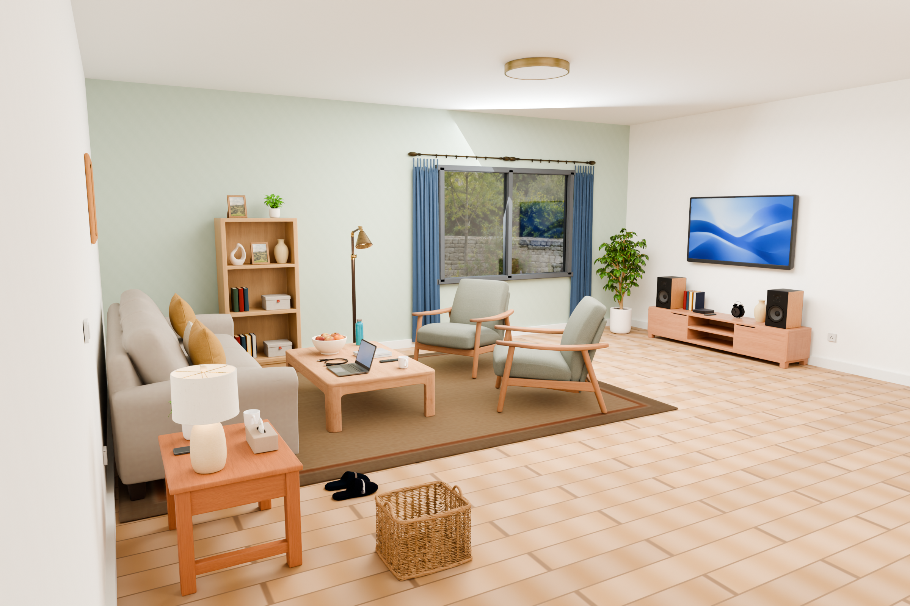
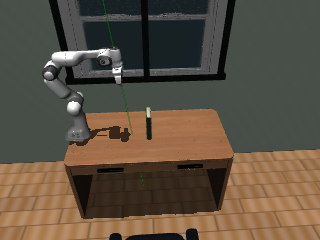
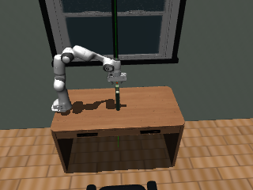
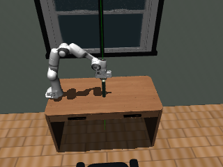
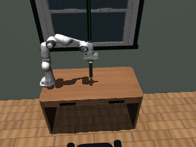
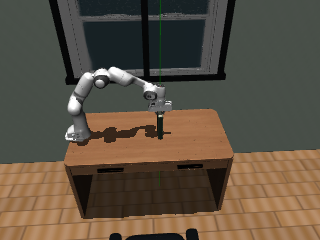
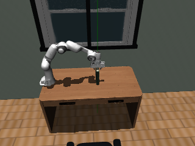
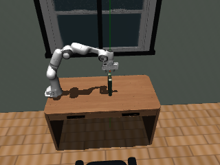
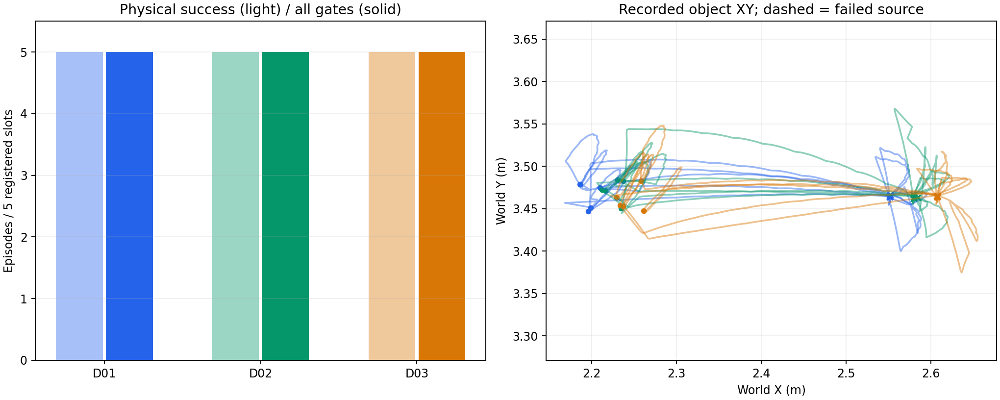

静态客厅，不代表批量可靠性
01 / 目标与当前进度
让生成的场景，
成为可用的
训练数据。
大批量生成高质量、可供具身智能训练使用的仿真数据。
已经能生成场景、执行有限任务并产出数据；最新固定案例已贯通数据读取与真实动作消费，接下来验证更多组合、学习价值和批量生产。
内容快照 · 截至 C01 封存

通过当时轨迹门，批次工程门未过
全部通过固定可见性门
保留 1 个开发包，学习价值待证
WHAT SUCCESS MEANS
目标如何判断达成
按证据逐项判断。尚未设定的量产数值目标保留待定，不用完成百分比代替验证。
限定范围的成果正在接通仍有缺口 / 待验证
| 指标 | 达成标准 | 当前证据 | 状态与差距 |
|---|---|---|---|
| 场景与任务 | 生成可执行的环境，机器人能够完成任务。 | 64 件物体的客厅案例；导航、抓放展示；最新固定搬运成功。[room] [simulation] [velocity] | 有限案例通过 任意请求、更多任务和关节物体尚未系统验证。 |
| 物理与观察质量 | 几何、接触、稳定性与全程观察均通过明确标准。 | 固定搬运 17,500 步回放一致；351/351 帧通过可见性门。[velocity] [temporal] | 限定条件通过 物性仍是未标定先验；看得见不等于足够用于学习。 |
| 数据格式与消费 | 状态、图像、动作和时间对齐，并能被下游正确使用。 | 历史 15 份 LeRobot v3 分片已由官方读者重读；新动作块包完成读取与 17,500 步真实消费回归。[pilot] [temporal] [consumer] | 单例端到端通过 新 HDF5 动作契约需专门适配；网络输入、更多组合与通用框架兼容性尚待验证。 |
| 有效多样性 | 覆盖独立资产、布局、任务与环境变化。 | 历史 3 个近邻配置；当前 1 个历史同源开发组合。[pilot] [consumer] | 独立覆盖不足 3 个配置并非 3 个独立场景族；最新独立验证组合为 0。 |
| 合格产量与稳定性 | 按事前固定名额持续产出，失败也如实计数。 | 历史 15/15 条通过当时轨迹验收；O01 保留 1 份开发包，C01 完成接口回归。[pilot] [temporal] [consumer] | 尚未稳定量产 历史批次工程门未通过；最新合格训练 episode 为 0。 |
| 单位成本 | 每条合格数据的时间、算力、存储均能追溯。 | 历史已测服务时间 ≥390.7 秒/条，增量存储 9.166 GiB。[pilot] | 成本记录不完整 时间只是下界，缺部分 I/O 与包装器墙钟；不含旧资产成本。 |
| 人工介入 | 批处理能自动检查、恢复，并记录人工干预。 | 已有缓存、版本绑定、受限运行与失败记录；历史批次无逐配置控制调参。[architecture] [pilot] [temporal] | 仍需工程介入 还需接通统一生产入口；人工与编排用时未完整测量。 |
| 学习效果 | 固定学习器在独立测试上确实因数据而进步。 | 已有已见初始化的学习策略成功；ACT 小试 12 次执行中成功 2 次。[learned] [act] | 收益尚未证明 ACT 小试门未通过；无独立资产/布局学习收益或实机迁移结论。 |
口径说明：历史 15 条使用当时的验收标准；最新 O01 是用途受限的开发包。两者不可相加为当前合格训练产量。查看证据索引 ↓
02 / 从场景到训练价值
先打通链路，再验证能否扩大。
自己的场景生成器是主线。采集器负责产出示范，学习器负责检验这些示范有没有用。
- 01
场景生成
文本 / 图像 → 结构化需求 → 资产 → 布局 → 修复 → 装配
已有可展示案例 - 02
仿真与任务
绑定模型、物性与任务；检查工具、路径、接触和稳定性
固定搬运已成功 - 03
采集与交付
专家执行 → 同步观察 / 动作 → 质检 → 导出 → 读取 → 真实消费
单例开发链路已闭合 - 04
学习验证
固定学习器；独立划分；同预算比较数据带来的收益
小试未达准入门 - 05
规模化生产
扩大有效覆盖；批量调度；完整成本；稳定合格产量
尚未达成
质量失败 → 定位与最小修复；学习薄弱点 → 决定下一批生成什么。后半条反馈链仍是后续计划。
采集器：把任务做一遍，记下来。
用规划器、专家控制器或示范扩增，驱动机器人完成动作，同步保存图像、机器人状态、动作和时间，再做质量检查。
采数据不要求每个新场景都先训练出一个成功策略。
学习器：用这些数据学习，再考试。
用固定的模仿学习或其他策略训练方法，在事先隔离的测试条件下评估任务成功率，判断生成的数据是否改善能力。
训练集上的成功，还不能证明独立场景里的泛化。
WE ARE HERE固定案例的开发链路已闭合，
固定案例的开发链路已闭合，
下一步验证其他组合。
固定搬运、时序观察、导出/读取和真实动作消费均已通过。C01 使用实际读者、适配器与原控制器执行 17,500 步，与封存控制、状态和接触一致。
当前单例接口分支结束。先固定另外两个开发组合，并审计未触及的保留组身份，再验证流程复用与学习输入；生产扩采和新策略训练仍暂停。
下一步怎么做 →数据究竟是图像，还是视频？格式是否标准？
训练数据是一段带时间顺序的交互记录。每个时刻包含 RGB 图像、机器人本体状态、动作和时间；策略可以取单帧或一段历史。展示用 MP4 是播放载体，不能单独代替动作与状态标签。
历史标准导出
LeRobot 0.4.0 的 v3 数据格式，20 Hz、双路 320×240 RGB、18 维状态、8 维动作，采用图像存储；15 份分片经过官方读取器逐行检查。格式文档 ↗
最新动作块开发包
HDF5 保存 351 个观测、350 个动作块，每块 50×15，保留 1 ms 子步的位置、目标速度和夹爪参考。容器成熟，但动作契约是项目专用；已由 C01 验证真实执行，但通用外部框架兼容性尚待核验。
特权状态、分割、实际执行器命令和阶段标签用于审计，与默认学习观察隔离。证据：O01 →
03 / RELATED WORK
差距主要在覆盖、验证和规模。
我们已有可执行的局部链路。成熟工作进一步证明了大范围生成、学习价值或生产效率。
比较的是能力覆盖与证据成熟度。
下面采用论文与官方资料截至 2026-09-24 的作者报告；本项目未统一复现。不同任务、硬件和评测协议下的数字不作直接排名，所列工作也并非穷尽。
比较对象与时间
| 工作 / 原始来源 | 首次预印本日期 | 为何纳入比较 |
|---|---|---|
| SAGE ↗ | 修订 2026-02-20 | 任务驱动的场景生成与学习 生成器与评审器迭代，提供 SAGE-10k，并报告未见物体和布局上的策略泛化。 |
| SceneSmith ↗ | 修订 2026-05-30 | 密集室内场景与物理可用性 分层生成家具与小物体，结合关节资产检索、物性估计和机器人策略评测。 |
| RoboCasa365 ↗ | 首发版本 | 丰富任务与学习基准 365 项任务、2,500 个厨房环境，并提供人类与合成示范及系统学习评测。 |
| EmbodiedGen V2 ↗ | 修订 2026-08-18 | 可执行任务世界与迁移 连接资产、交互信息、任务与多房间环境，报告下游强化学习和实机迁移实验。 |
| RoboCousin ↗ | 本次检索中较新的相关工作 | 观测到资产与规模化示范 论文报告 3,000+ 物体、50 项任务、百万级专家轨迹；代码与数据发布完整性未在本项目复验。 |
| RoboTwin 2.0 ↗ | 修订 2025-08-27 | 双臂任务、示范与环境随机化 731 个物体、50 项任务、5 类机器人，结合专家生成与多维环境随机化。 |
| ManiSkill3 ↗ | 修订 2025-05-30；平台持续维护 | 仿真吞吐与学习基础设施 提供 GPU 并行仿真、渲染、异构场景和学习基线；用于参考基础设施，而非直接比较生成质量。 |
| 比较点 | 我们的已达部分 | 相关工作提供的参照 | 仍需补齐 |
|---|---|---|---|
| 生成场景生成链路 | 有限成果 有文本/图像入口、资产绑定、布局修复与装配。 |
SAGE / SceneSmith 已有任务驱动、密集场景与更广覆盖评测。 | 需要统一请求集上的生成质量与成功率评测。 |
| 生成资产与交互能力 | 有限成果 刚体几何与局部任务接入已有证据。 |
SceneSmith / RoboCousin 提供关节资产或可操作接触标注。 | 缺通用关节、抓取点、开合等自动接入验证。 |
| 生成任务与有效多样性 | 仍有缺口 主要是有限导航/抓放；3 个近邻配置同源。 |
RoboCasa365 / RoboTwin 2.0 覆盖更丰富任务、环境和机器人。 | 需独立资产/布局组合，不能用重复轨迹充当多样性。 |
| 质量物理可靠性 | 有限成果 固定案例有静置、任务执行和完整回放。 |
SceneSmith / EmbodiedGen V2 报告规模化稳定性或下游可用性评测。 | 需跨资产与扰动测试；现实物性仍待标定。 |
| 质量全程视觉可用性 | 有限成果 最新 351 帧可见性通过，目标最少 134 像素。 |
SAGE / RoboCasa365 在视觉策略训练与评测中检验观察价值。 | 可见阈值通过仍不能证明细节足够训练。 |
| 质量质量证据与拒绝机制 | 正在接通 新路径已有版本绑定、实际入口拒绝和负例。 |
SAGE / SceneSmith 包含语义、视觉或物理评审环节。 | 我们的新门控尚未覆盖全部旧生产路径，也未证明优于现有方法。 |
| 数据自动采集与格式 | 有限成果 历史 15 份官方 LeRobot v3 分片；新动作块包已真实执行。 |
RoboTwin 2.0 / RoboCousin 提供可复用示范生成流水线。 | 单例消费缺口已关闭；需验证更多组合的流程复用与通用学习接入。 |
| 数据规模与运行效率 | 仍有缺口 完成有限试产，批次成本完整性门未过。 |
RoboCousin / ManiSkill3 分别参考数据规模与并行仿真能力。 | 缺持续吞吐、完整单位成本与自动恢复实测。 |
| 学习学习收益与泛化 | 仍有缺口 已见初始化有成功；ACT 小试 2/12，门未过。 |
SAGE / RoboCasa365 / RoboTwin 2.0 有数据规模、多样性或迁移收益实验。 | 需同预算、固定学习器和独立测试集上的对照。 |
| 学习实机迁移 | 仍有缺口 尚无实机验证结论。 |
EmbodiedGen V2 / RoboCousin / RoboTwin 2.0 论文报告现实机器人实验。 | 需仿真资格与学习基线稳定后，再安排真实机器人验证。 |
| 研究创新主张 | 仍有缺口 失败证据、任务约束与最小修复已有研究切入点。 |
SAGE / SceneSmith 相关工作也已有评审、迭代和自修复机制。 | 需消融与等预算对照；工程细致不直接等于方法创新。 |
共 11 个比较点。所有状态仅对应已记录证据。
直白地说：现在可以生产一些数据，但真实可靠性、稳定性和丰富程度还需要补课，也还没有形成稳定的大批量生产能力。
04 / PROJECT EVIDENCE
有可以展示的结果，
也有清楚的适用边界。
全部图片和视频来自项目现有产物。本次汇报仅复制展示素材，没有新增生成、仿真或训练实验。
A / 2026.09.14
静态场景案例一个完整的室内场景
64 件家具与日用品6 个高清视角40 组支撑检查92 张 GLB 内嵌贴图
能说明：已完成复杂室内装配、多视角观察与静态检查。范围：经过工程修订的一个案例；窗外为二维背景，物性与任意新场景的可用性不能由此推断。证据 →
B / 2026.09.14
规划器 / 专家控制器机器人在场景中导航、抓取和放置
查看抓取近景
能说明：场景已接入机器人任务执行与状态回放。这组展示使用专家控制，可访问任务真值，不属于学习策略泛化结果。证据 →
C / 最新 · 2026.09.24
V01 → O01 → C01一次成功搬运，交付为完整开发数据包
固定 book_05—desk，保持朝向平移 0.10 m。17.5 秒、九个阶段全部完成，保存控制的独立回放一致；随后构建全程观察与动作块数据，并经真实消费接口重新执行，与源记录一致。
17,5001 ms 动力学子步
351 / 351观察可见性通过
350动作块读回并真实执行
4.715 mm终态水平误差







横向浏览九阶段与末态的 10 张原始预览；不是完整视频。图像维持原始 320×240 分辨率。
交付了什么
约 32.805 MiB 的 HDF5 开发包；RGB、本体状态、时间、动作与下一观察已逐值读回。O01 的 8 项软件检查与 13 项加载核验通过；C01 另有 13 项软件检查与 11 项加载核验，并完成真实消费回归。
下载汇报数据摘要（JSON） ↓还不能说明什么
目标最少仅 134 像素，约占画面 0.1745%，学习细节是否足够未知。仅 1 个同源组合；独立组合、视觉学习闭环和学习效果尚未验证。
O01 开发包 1 份；C01 未新增数据，生产资格仍为 0。能说明：固定案例已贯通“生成产物 → 成功仿真 → 图像 → 数据导出/读取 → 真实动作消费”。C01 无新渲染或策略前向，不能称实时视觉闭环；生产资格继续拒绝。V01 证据 · O01 证据 · C01 证据
D / 历史试生产 · 2026.09.21
15 条轨迹，标准导出已走通

3 配置 × 5 名额，14,910 次动作转换、745.5 秒专家示范；官方 LeRobot 读者重读通过。
范围：同一书本、篮子与书房布局族。因成本字段不全，整体批次工程门未通过，不能据此宣称量产就绪。证据 →
E / 学习策略 · 2026.09.21
已见初始化下完成完整任务
新增 5 帧本体历史残差，配合既有机械臂与视觉夹爪模型，46.10 秒完成任务，末态水平误差 2.445 mm。下载视频 ↓
范围：已见初始化，机械臂仅用本体信息。后续 ACT 小试 2/12 成功，未过准入门，独立泛化仍待建立。成功证据 · ACT 小试
证据索引与统计口径 · 9 组原始记录
以下是原始报告的汇报摘要。原始代码、模型、训练数据和服务器日志不随网页发布。文件标识用于在项目内追溯，完整复制素材的 SHA256 清单保留在本地交付目录。
目标与生成框架
目标是高质量具身训练数据的批量生产。生成器连接结构化需求、资产、布局、修复、装配和验收；局部成功不能替代最终目标。
原始记录标识
scene/AGENT.mdscene/docs/ARCHITECTURE.md客厅修订版交付
64 件物体、6 个高清视角、深度与实例标签，40 组支撑检查。静态工程案例，窗外为二维背景；不代表任意场景的全自动物理可用性。
原始记录标识
scene_runs/codex_trellis_v2/scene_reliability_20260914_v1/living_room/REPORT.md导航与抓放展示
Stretch2 导航和 Panda 抓放由规划器/专家控制器驱动。展示视频来自已保存状态，没有为本次网页新增仿真实验。
原始记录标识
scene_runs/codex_trellis_v2/scene_reliability_20260914_v1/simulation/REPORT.mdscene_runs/codex_trellis_v2/embodied_phase1_20260913_v1/REPORT.md历史小批量试生产
3 配置 × 5 名额，15 条通过当时物理、回放、观察和官方读取验收；14,910 次转换。成本完整性门失败，配置同源，不能计为最新生产资格或独立场景泛化。
原始记录标识
scene_runs/codex_trellis_v2/embodied_production_pilot_20260921_v1/REPORT.md已见初始化的学习策略成功
既有机械臂/视觉夹爪与新增 5 帧本体历史残差组合，46.10 秒完成任务。机械臂仅用本体，视觉影响夹爪；不代表从零学习、未见泛化或视觉机械臂收益。
原始记录标识
scene_runs/codex_trellis_v2/embodied_release_history_20260921_v1/REPORT.md公开参考 ACT 配方小试
9 条示范，2 个种子各 20,000 更新；12 次实际执行中成功 2 次，12 次独立回放通过。小试准入门失败，不能推广为 ACT 方法整体无效。
原始记录标识
scene_runs/codex_trellis_v2/embodied_reference_act_20260922_v1/REPORT.md固定搬运执行与回放
补充解析目标速度参考，固定 book_05—desk 完成 17.5 秒九阶段任务；终态水平误差 4.71536 mm，抬升 148.443 mm，17,500 步独立回放状态与接触误差为 0。
原始记录标识
scene_runs/codex_trellis_v2/embodied_velocity_reference_20260924_v1/REPORT.md时序观察与开发数据包
351/351 帧通过固定可见性门；350 个 50×15 动作块逐值读回，HDF5 约 32.805 MiB。O01 交付 1 个开发包、0 个生产合格训练 episode；后续真实消费已由 C01 验证，学习与独立组合仍待验证。
原始记录标识
scene_runs/codex_trellis_v2/embodied_temporal_dataset_20260924_v1/REPORT.mdscene_runs/codex_trellis_v2/embodied_temporal_dataset_20260924_v1/RESULT.jsonscene_runs/codex_trellis_v2/embodied_temporal_dataset_20260924_v1/NEXT_STEP.md真实动作块消费回归
真实读取 O01 的 350 个动作块，通过新适配器和原控制器完成 17,500 步原生积分；控制、状态、接触及块边界本体状态/时间的最大比较误差均为 0。单例开发接口闭合；无新渲染、策略前向或训练，新开发包/合格训练 episode 均为 0。
原始记录标识
scene_runs/codex_trellis_v2/embodied_block_consumer_20260924_v1/REPORT.mdscene_runs/codex_trellis_v2/embodied_block_consumer_20260924_v1/RESULT.jsonscene_runs/codex_trellis_v2/embodied_block_consumer_20260924_v1/NEXT_STEP.md05 / NEXT STEPS
先可靠，再丰富，最后做大。
按完成条件推进，不承诺未经验证的日程。每一步都对应数据生产瓶颈，并设预算和退出条件。
01 / 先验证流程能否复用
近期计划
把已走通的流程用到另外几组物体和场景，验证能否重复产出可靠数据。
固定另外两个开发组合
当前单例的读取与动作消费已经通过，结束该接口分支。先审计资产目录和历史，再一次性登记另外两个组合的资产、支撑、任务和种子，保持朝向平移 0.10 m；不得看失败结果后替换组合。
复用全流程，如实统计产量
按依赖顺序验证生成、静置、工具与路径、完整执行、独立回放、351 帧观察、导出和读取。失败就记录并停止下游；两例都失败也不追加第三例搜索。统一记录质量、产量与成本。
隔离保留组，再准备学习基线
事前登记未参与开发的保留组并审计历史，不凭改标签宣称独立。流程复用通过后，再按冻结规则验证保留组，另立学习输入与可重复基线的预算；生产扩采和新策略训练继续等待准入。
交付标准：两个固定开发组合有完整分母、拒绝原因与成本；独立保留组身份可追溯。建议本轮最多 2 次生成、12 次物理尝试、100,000 积分步，失败不扩名额。
02 / 再做规模与价值
长期计划
自动、大批量地产出丰富可靠的数据，并证明这些数据能帮助机器人学得更好。
扩展真正有效的覆盖
逐步增加资产、布局、任务和环境扰动；划分训练与未见测试来源，避免相近初始化造成虚假的多样性。
建立持续生产能力
将生成、质检、采集、导出和恢复串成稳定流程；跟踪每批合格率、吞吐、单位成本、存储和人工介入。
证明学习与迁移收益
固定学习器与预算，对比单场景/多场景、图像/本体等条件；以独立任务成功率评估。仿真结果稳定后，再规划有资源保障的实机验证。
交付标准：持续合格产量、可接受成本、可复现的独立学习收益。数值目标需在试点后事前登记。
03 / 研究假设 · 尚未排期
创新设想
让系统发现哪里有问题、判断怎么修、决定还需要生成什么数据，用更少成本产出更有用的数据。
优先探索：失败驱动的最小修复
由碰撞、遮挡、不可达或控制失败的证据定位原因，只修必要部分；与直接丢弃、通用修复和等预算随机重生成比较。
按任务分配几何与验证成本
把碰撞精度和检查预算集中到真实接触区域；研究何时简化足够、何时必须更精细，并显式记录物性不确定性。
让学习器指导下一轮采集
根据未见测试中的薄弱点选择新物体、布局或任务，而非只追求轨迹数量；用固定预算检验是否比随机扩充更有效。
目前是候选研究方向，尚未证明新颖性或收益；需要文献定位、消融实验与明确退出条件。
下一次汇报重点回答
另外两个固定组合，在哪些环节成功或失败？
保留组是否真正独立，流程能否可靠复用？
这些数据是否真的让学习器表现更好？